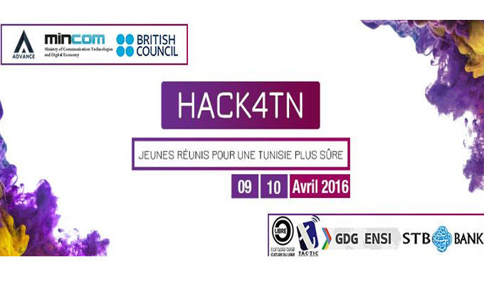

L’équipe Advance et GDG ENSI, en partenariat avec et le Ministère des Technologies de la Communication et de l’Économie Numérique, organise la première édition de leur événement phare « Hack4TN » qui se tiendra le 9 et 10 Avril à l’amphithéâtre Carthage la Modernité
L’ENSI Junior entreprise organise la 10ème édition de son forum annuel sous le thème « Business Intelligence » mercredi 04 novembre 2015 à l’école nationale des sciences de l’informatique à la Manouba.